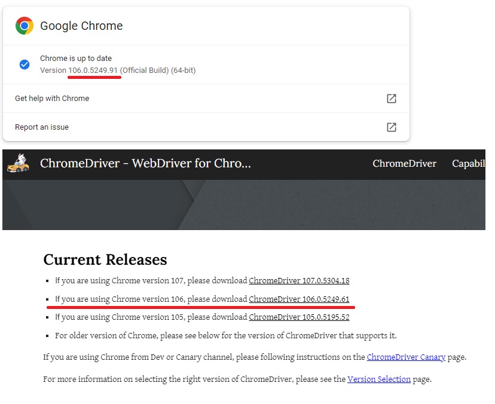
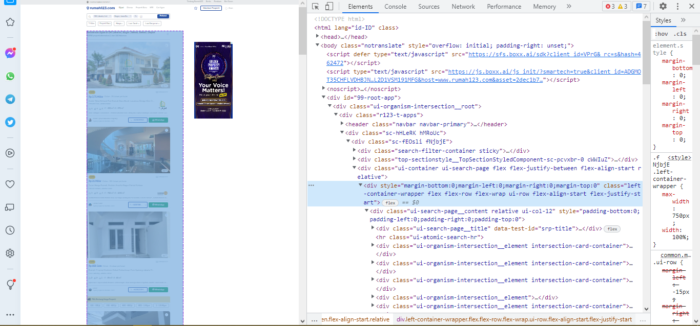
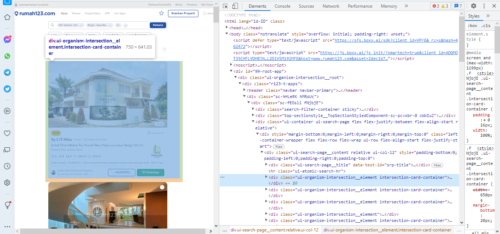
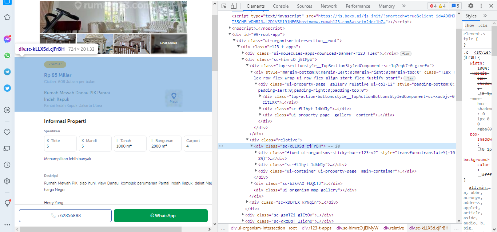
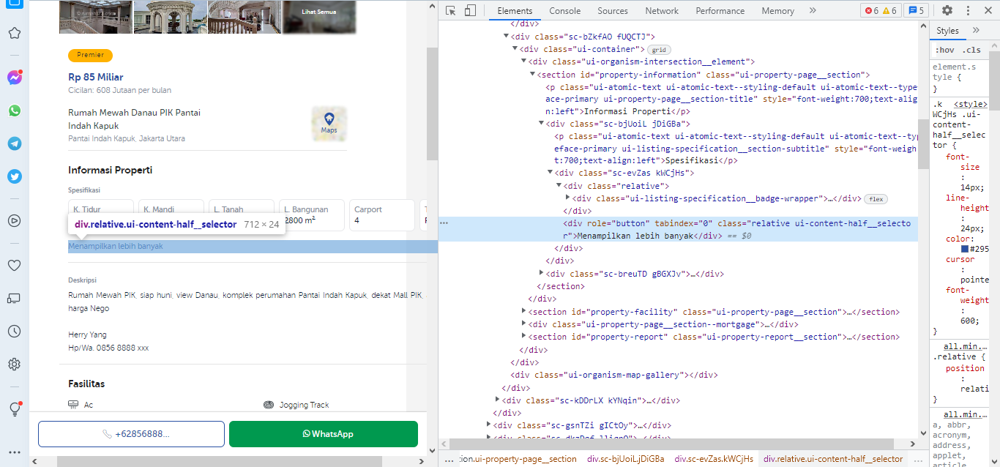
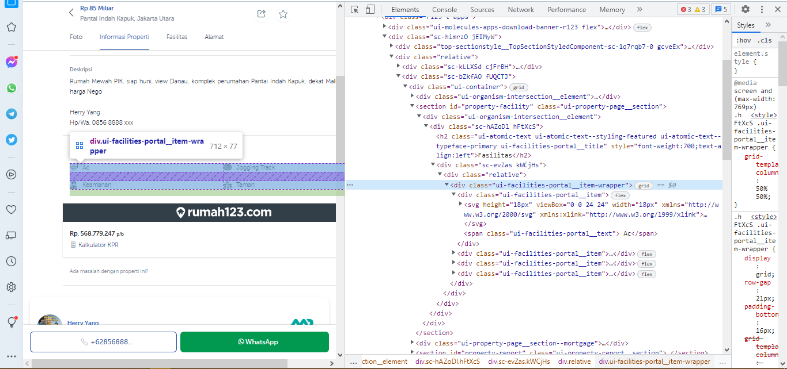

Web Scraping
Contents
Web Scraping#
1. Introduction#
In this notebook, I will demonstrate the ability of python Selenium and BeautifulSoup to scrap Jabodetabek House Pricing data from a third party website, utilizing other supporting package such as logging and datetime to improve insight about our web scraping framework.
This website provide listing of offered price of used and new houses to be sold. Using this data, we can gain insight about how home-owner in Jabodetabek Area values their house price and how each parameter associates with the offered price, i.e. how significant each of the property’s aspect that majority of owners believe will drive their house price worthiness.
This notebook focuses entirely on how to web scrap, from identifying the website structure to developing a single python object to scrap the website, embracing simple object-oriented programming attributes and methods. Analysis of retrieved data will be explained in other notebook associated in this repository.
Note that this web scraping program only works with this specific house pricing website.
2. Requirements#
In order to access website using Chrome Webdriver, one must verify that:
Chrome(denotes the fully installed version of Chrome Browser) must be installed in the system. Identify the installed version of Chrome first.Chrome Webdrivermust be provided, which its version shall match the installed version ofChrome. Further explanation on this can be found in https://chromedriver.chromium.org/downloads/version-selection. Download the matched version ofChrome Webdriver, the file name will bechromedriver.exe.Make sure that
Chrome Webdrivercan be detected while utilizingSeleniumfrom python. I choose to add thechromedriver.exeexecutable file path to ChromeDriver when instantiatingwebdriver.Chrome.

Chrome version with Chrome Webdriver version
3. Web Scraping Flow#
from selenium import webdriver
from selenium.webdriver.common.by import By
from selenium.webdriver.support.ui import WebDriverWait
from selenium.webdriver.support import expected_conditions as EC
from selenium.webdriver.common.desired_capabilities import DesiredCapabilities
from selenium.common.exceptions import ElementClickInterceptedException, NoSuchElementException
from selenium.webdriver.common.keys import Keys
from bs4 import BeautifulSoup
from numpy import random
import time
import pandas as pd
import logging
import ast
import re
URL = 'https://www.rumah123.com/jual/residensial/?place[]=dki-jakarta&place[]=bogor&place[]=depok&place[]=bekasi,bekasi&placeId[]=8de06376-49a3-4369-a01b-00085aefe766&placeId[]=dfd71096-eda2-4776-b3ca-542d8c5fb12b&placeId[]=a4a34395-ebe5-4930-9456-df327a9f484a&placeId[]=66899e8e-4896-467b-8e54-ab7c533bd616#qid~a0314d88-70ff-4b6c-b4bd-45f4c9f41d04'
chrome_options = webdriver.ChromeOptions()
chrome_options.add_argument('--disable-infobars')
chrome_options.add_argument('start-maximized')
chrome_options.add_argument('--disable-extensions')
chrome_options.add_argument('--disable-notifications')
prefs = {"profile.default_content_setting_values.notifications": 2}
chrome_options.add_experimental_option('prefs', prefs)
browser = webdriver.Chrome(
executable_path='D:\\chromedriver.exe',
options=chrome_options
)
browser.implicitly_wait(10)
browser.get(URL)
time.sleep(3)
3.1. Accessing main entry list#
All of the house listings in main page is stored in listing-container as below snapshot. We are going to retrieve all of the listings in a single page by accessing this Class Name.


main_listing_class = 'ui-organism-intersection__element.intersection-card-container'
main_listings = browser.find_elements_by_class_name(main_listing_class)
print(len(main_listings))
main_listings[:5]
20
[<selenium.webdriver.remote.webelement.WebElement (session="27bc6ea0e55c8fecd59320e08cde192d", element="d3094ef4-6cc7-4447-9f9a-ad8868efc41f")>,
<selenium.webdriver.remote.webelement.WebElement (session="27bc6ea0e55c8fecd59320e08cde192d", element="b3c19c0a-e747-43ea-853c-8a11e806b8d2")>,
<selenium.webdriver.remote.webelement.WebElement (session="27bc6ea0e55c8fecd59320e08cde192d", element="854a09a0-1014-49a1-8535-318d2a670558")>,
<selenium.webdriver.remote.webelement.WebElement (session="27bc6ea0e55c8fecd59320e08cde192d", element="aea04bb6-799c-4e75-9dd4-315958cbf218")>,
<selenium.webdriver.remote.webelement.WebElement (session="27bc6ea0e55c8fecd59320e08cde192d", element="0fb9609e-e003-43bd-8371-59949fe2f638")>]
House listing is located in Listing Card, the children of main_listing element above. We will access this to retrieve Navigation link to its detailed listing information.
We are going to try to a house list as below codes:
# example of using 1 listing
listing_card_html = main_listings[2].get_attribute('outerHTML')
soup_listing = BeautifulSoup(listing_card_html, "html.parser")
# listing card properties
listing_class = 'ui-organisms-card-r123-featured__middle-section__title'
nav_link = 'https://www.rumah123.com' + soup_listing.select(('.' + listing_class))[0]['href']
nav_link
'https://www.rumah123.com/properti/jakarta-selatan/hos11355709/'
Using above lines, we can collect all of the listing_id and nav_link from the main entry list, which contain more than one listing. Note that each listing has been isolated as a list of WebElement object so that we won’t retrieve overlapped records.
nav_links = []
for listing in main_listings:
try:
soup = BeautifulSoup(listing.get_attribute('outerHTML'))
listing_class = 'ui-organisms-card-r123-featured__middle-section__title'
nav_links.append(
'https://www.rumah123.com' + soup.select(('.' + listing_class))[0]['href']
)
except IndexError:
pass
nav_links
['https://www.rumah123.com/properti/jakarta-selatan/hos10107882/',
'https://www.rumah123.com/properti/jakarta-barat/hos10985513/',
'https://www.rumah123.com/properti/jakarta-selatan/hos11355709/',
'https://www.rumah123.com/properti/jakarta-selatan/hos10697193/',
'https://www.rumah123.com/properti/jakarta-selatan/hos8770206/',
'https://www.rumah123.com/properti/jakarta-selatan/hos7010634/',
'https://www.rumah123.com/properti/jakarta-selatan/hos10941017/',
'https://www.rumah123.com/properti/jakarta-timur/hos8602350/',
'https://www.rumah123.com/properti/jakarta-selatan/hos10059115/',
'https://www.rumah123.com/properti/jakarta-selatan/hos10849554/',
'https://www.rumah123.com/properti/jakarta-barat/aps2727387/',
'https://www.rumah123.com/properti/jakarta-selatan/hos11327520/',
'https://www.rumah123.com/properti/jakarta-barat/aps2726460/',
'https://www.rumah123.com/properti/jakarta-utara/hos2202843/',
'https://www.rumah123.com/properti/jakarta-selatan/hos11170878/',
'https://www.rumah123.com/properti/jakarta-utara/hos11344691/',
'https://www.rumah123.com/properti/jakarta-utara/hos11351396/',
'https://www.rumah123.com/properti/jakarta-barat/hos11352875/',
'https://www.rumah123.com/properti/jakarta-selatan/aps2697669/']
Our scraping framework will loop-accessing all of the stored navigation link of house listing.
3.2. Accessing specific House Listing#
Having information of each listing navigation link, we now begin to scrap information of each listing by repetitively accessing each of the link using our Chrome Webdriver.
We have to identify each particular object that we want to scrap.
Listing Header#

Information:
Price
Title
Address
URL = 'https://www.rumah123.com/properti/jakarta-timur/hos10008254/'
browser.get(URL)
time.sleep(3)
header_class_name = 'ui-container.ui-property-page__main-container'
header_element = browser.find_element_by_class_name(header_class_name)
soup_header = BeautifulSoup(header_element.get_attribute('innerHTML'), 'html.parser')
# scraping
try:
currency, price, price_unit = \
soup_header.select('.r123-listing-summary__price')[0].text.split()
title = soup_header.select('.r123-listing-summary__header-container-title')[0].text.strip()
address = soup_header.select('.r123-listing-summary__header-container-address')[0].text.strip()
except AttributeError:
pass
# compile header
site_url = {'url': URL}
header = dict(
title = title,
price_currency = currency,
price_value = price,
price_unit = price_unit,
address = address
)
header
{'title': 'Rumah Murah di Jalan Cipinang Baru Raya Jakarta Timur',
'price_currency': 'Rp',
'price_value': '2',
'price_unit': 'Miliar',
'address': 'Rawamangun, Jakarta Timur'}
Property Specifications#
Detailed list of property specification will popped-up after we click menampilkan lebih banyak, as shown in below snapshot. We will retrieve the element after we clicking using the WebDriver.

# commanding clicking
details_popup_class_name = 'relative.ui-content-half__selector'
click_element = browser.find_element_by_class_name(details_popup_class_name)
browser.execute_script('arguments[0].click();', click_element)
details_element = browser.find_element_by_class_name('ui-listing-specification__table')
details_soup = BeautifulSoup(details_element.get_attribute('innerHTML'), 'html.parser')
# compile available details
details = {}
for spec in details_soup.select('.ui-listing-specification__table--row'):
label, value = [_.text for _ in spec.find_all('p')]
details.update({label: value})
details
{'K. Tidur': '3',
'K. Mandi': '3',
'L. Tanah': '56 m²',
'L. Bangunan': '87 m²',
'Carport': '1',
'Tipe Properti': 'Rumah',
'Sertifikat': 'SHM - Sertifikat Hak Milik',
'Daya Listrik': '2200 mAh',
'Jumlah Lantai': '2',
'Tahun dibangun': '2022',
'Kondisi Properti': 'Baru',
'Kondisi Perabotan': 'Unfurnished',
'ID Iklan': 'hos10008254'}
If the page doesn’t have that clickable element (i.e. lister only provided minimum information of property specification), we just scrap from what is just available in the page, using below codes:
details_element = browser.find_element_by_class_name('ui-listing-specification__badge-wrapper')
details_soup = BeautifulSoup(details_element.get_attribute('innerHTML'), 'html.parser')
# compile available details
details = {}
for spec in details_soup.select('.ui-atomic-badges__children.relative'):
label, value = [_.text for _ in spec.find_all('p')]
details.update({label: value})
details
{'K. Tidur': '3',
'K. Mandi': '3',
'L. Tanah': '56 m²',
'L. Bangunan': '87 m²',
'Carport': '1',
'Tipe Properti': 'Rumah',
'Sertifikat': 'SHM - Sertifikat Hak Milik'}
Provided Facilities#

facilities_element = browser.find_element_by_class_name('ui-facilities-portal__item-wrapper')
facilities_soup = BeautifulSoup(facilities_element.get_attribute('innerHTML'), 'html.parser')
facilities = {
'facilities': ', '.join({_.text for _ in facilities_soup.select('.ui-facilities-portal__item')})
}
browser.quit()
facilities
{'facilities': 'Keamanan, Keamanan 24 jam, CCTV'}
3.3. Combining Scraped Data from a Single Listing Page#
From section 2.2 Accessing specific House Listing, we have compiled several collections of scraped data as below:
Records of Listing URL, stored in
urlvariableRecords of Listing Header, stored in
headervariableRecords of Property Details, stored in
detailsvariableRecords of Provided Facilities, stored in
facilitiesvariable
Thus, a single observation of house listing will be presented as a dictionary of records, as explained in code below. We specifically use the dict update method to merge the records and ignoring the duplicated records (if any).
Collection of observations will be stored as a list of dictionaries, which then can be processed using pandas.DataFrame constructor. More of this will be explained in the next chapter.
4. Completing Web Scraping Framework#
We now begin to complete our framework by creating a program to iterate over listing pages.
The concepts of my web scraping object are:
First thing to do is to collect the navigation links to each listing, which we obtain from
main entry page, so we will create a non-public attribute to store these links and reset the attribute after all of the stored links have been accessed (a chance to preserve memory). Proceed to store new links for each main entry page.Scraping the data will be isolated by a single method, which stored in a
WebElement. Each records that scraped will be passed to acontainer attribute. This method will be repetitively executed as the navigation links is passed.Provide a non-confusing
public methodto begin the scrap, usingstarting urlandpage range. The convenient exception handling and logging will be controlled in this method as the iteration of scraping methods (1 and 2) is continuously running to maintain the web scraping flow.Caching the scraped data after finished accessing a single main entry page.
from selenium import webdriver
from selenium.webdriver.common.by import By
from selenium.webdriver.support.ui import WebDriverWait
from selenium.webdriver.support import expected_conditions as EC
from selenium.webdriver.common.desired_capabilities import DesiredCapabilities
from selenium.common.exceptions import ElementClickInterceptedException, NoSuchElementException, TimeoutException, StaleElementReferenceException
from selenium.webdriver.common.keys import Keys
from bs4 import BeautifulSoup
from numpy import random
import time
from datetime import datetime
import pandas as pd
import logging
class WebScraper():
""" Scrap the website using WebsScraper.scrap() method. Start URL should has '?' (means starts the query)"""
def __init__(self, start_url):
self._URL = start_url
self._nav_links = []
self._observations = []
self._chrome_options = webdriver.ChromeOptions()
self._chrome_options.add_argument('--disable-infobars')
self._chrome_options.add_argument('start-maximized')
self._chrome_options.add_argument('--disable-extensions')
self._chrome_options.add_argument('--disable-notifications')
self._prefs = {"profile.default_content_setting_values.notifications": 2}
self._chrome_options.add_experimental_option('prefs', self._prefs)
self._browser = webdriver.Chrome(
executable_path='D:\\chromedriver.exe',
options=self._chrome_options
)
def _main_page_accessor(self, url):
""" Collects navigation links from a single entry page"""
url_ = url
logging.info(f'Scrapping {url_}')
# Starts page access
self._browser.get(url_)
# Post access
main_listing_class_ = 'ui-organism-intersection__element.intersection-card-container'
try:
WebDriverWait(self._browser, 20).until(
EC.presence_of_element_located((By.CLASS_NAME, main_listing_class_))
)
finally:
main_listings_ = self._browser.find_elements_by_class_name(main_listing_class_)
links_ = []
for listing_ in main_listings_:
try:
soup_ = BeautifulSoup(listing_.get_attribute('innerHTML'), 'html.parser')
listing_class_ = 'ui-organisms-card-r123-featured__middle-section__title'
links_.append(
'https://www.rumah123.com' + soup_.select(('.' + listing_class_))[0]['href']
)
except IndexError:
logging.warning(f'Failed to get (1) listing navigation link from {url_}')
self._nav_links = links_.copy()
time.sleep(3)
def _listing_scraper(self, url):
""" Scraps from a single listing. Observations is stored as a dictionary"""
url_ = url
scrap_data_ = {}
# Starts page access
self._browser.get(url_)
# Post access:
# 1. Scraping Header
try:
WebDriverWait(self._browser, 20).until(
EC.presence_of_element_located((By.CLASS_NAME, 'ui-listing-specification__badge-wrapper'))
)
finally:
header_class_name_ = 'ui-container.ui-property-page__main-container'
header_element_ = self._browser.find_element_by_class_name(header_class_name_)
try:
soup_header_ = BeautifulSoup(header_element_.get_attribute('innerHTML'), 'html.parser')
scrap_data_['url'] = url_
scrap_data_['currency'], scrap_data_['price'], scrap_data_['price_unit_scale'] = \
soup_header_.select('.r123-listing-summary__price')[0].text.split()
scrap_data_['title'] = soup_header_.select('.r123-listing-summary__header-container-title')[0].text.strip()
scrap_data_['address'] = soup_header_.select('.r123-listing-summary__header-container-address')[0].text.strip()
except AttributeError:
logging.warning(
f'Failed to retrive property header for url ({url_}),'
' may retrieve incomplete information')
# 2. Scraping Provided Facilities
try:
facilities_class_name_ = 'ui-facilities-portal__item-wrapper'
facilities_element_ = self._browser.find_element_by_class_name(facilities_class_name_)
facilities_soup_ = BeautifulSoup(facilities_element_.get_attribute('innerHTML'), 'html.parser')
scrap_data_['facilities'] = \
', '.join({_.text for _ in facilities_soup_.select('.ui-facilities-portal__item')})
self._observations.append(scrap_data_)
except NoSuchElementException:
pass
# 3. Scraping Property Specification
details_popup_class_name_ = 'relative.ui-content-half__selector'
try:
#self._browser.find_element_by_class_name(details_popup_class_name_).click()
click_element_ = self._browser.find_element_by_class_name(details_popup_class_name_)
self._browser.execute_script('arguments[0].click();', click_element_)
details_element_ = self._browser.find_element_by_class_name('ui-listing-specification__table')
details_class_name_ = '.ui-listing-specification__table--row'
except (NoSuchElementException, ElementClickInterceptedException):
logging.warning(f'Click element not found for url ({url_}), basic information will be retrieved')
details_element_ = self._browser.find_element_by_class_name('ui-listing-specification__badge-wrapper')
details_class_name_ = '.ui-atomic-badges__children.relative'
try:
details_soup_ = BeautifulSoup(details_element_.get_attribute('innerHTML'), 'html.parser')
for spec in details_soup_.select(details_class_name_):
label_, value_ = [_.text.lower() for _ in spec.find_all('p')]
scrap_data_.update({label_: value_})
except AttributeError:
logging.warning(
f'Failed to retrive property specification for url ({url_}),'
' may retrieve incomplete information')
time.sleep(3)
def _cacher(self, file, until):
file_ = file
until_ = until
with open(file_, 'w', encoding='utf-8') as f:
f.write(f'Cached until {until_}\n')
f.write(str(self._observations))
def scrap(self, start_page, end_page):
""" Scrap the website"""
current_date_time_ = datetime.now().strftime('%Y-%m-%d_%H-%M')
logging.basicConfig(
filename=f'Scraped_Data/webscrap_log_{current_date_time_}.log',
format='%(asctime)s - %(levelname)s: %(message)s',
level=logging.INFO
)
start_page_ = start_page
end_page_ = end_page
cache_file_path_ = f'Scraped_Data/temp_cache_{current_date_time_}.txt'
cache_file_ = open(cache_file_path_, 'a').close()
for page in range(start_page_, end_page_ + 1):
try:
entry_page_url_ = self._URL + f'&page={page}'
self._main_page_accessor(entry_page_url_)
for link_ in self._nav_links:
try:
self._listing_scraper(link_)
except TimeoutException:
logging.warning(
f'Timeout occured when accessing url ({link_}),'
' may retrieve incomplete information')
continue
except StaleElementReferenceException:
self._listing_scraper(link_)
try:
self._cacher(cache_file_path_, page)
except UnicodeEncodeError:
pass
except TimeoutException:
logging.warning(f'Timeout occured when accesing entry page ({page})')
self._nav_links = [] # resets the _nav_links, continue to next main entry page
continue
except KeyboardInterrupt:
logging.exception(f'KeyboardInterrupt captured while accessing page ({page})')
break
logging.info('Scrapping finished, quitting browser.')
self._browser.quit()
return self._observations
Now let’s try our scraping framework:
TEST_URL = 'https://www.rumah123.com/jual/bogor/rumah/?'
bogor_house_records = WebScraper(TEST_URL).scrap(1, 2)
Below shows an example of a single observation, a dict with its keys are column field and the values pair are the records.
bogor_house_records[0]
{'url': 'https://www.rumah123.com/properti/bogor/hos10247521/#qid~76ff2ee6-b88b-4a4e-935d-8136ad1bd339',
'currency': 'Rp',
'price': '500',
'price_unit_scale': 'Juta',
'title': 'Rumah Strategis Nego di Palas Asri Town House Harga All In Siap Kpr',
'address': 'Bojong Gede, Bogor',
'facilities': 'Taman, Keamanan',
'k. tidur': '2',
'k. mandi': '1',
'l. tanah': '83 m²',
'l. bangunan': '45 m²',
'carport': '1',
'tipe properti': 'rumah',
'sertifikat': 'shm - sertifikat hak milik',
'daya listrik': '1300 mah',
'garasi': '1',
'jumlah lantai': '1',
'kondisi perabotan': 'unfurnished',
'id iklan': 'hos10247521'}
After we collected the observation, we are going to check if the records can be processed using pandas.DataFrame, as below:
import pandas as pd
house_bogor_df = pd.DataFrame(bogor_house_records)
house_bogor_df.sample(1).T
| 22 | |
|---|---|
| url | https://www.rumah123.com/properti/bogor/hos106... |
| currency | Rp |
| price | 1,68 |
| price_unit_scale | Miliar |
| title | Rumah Luas Strategis Dekat Cileungsi Akses Mud... |
| address | Cileungsi, Bogor |
| facilities | Taman, Keamanan |
| k. tidur | 3 |
| k. mandi | 2 |
| l. tanah | 200 m² |
| l. bangunan | 90 m² |
| carport | NaN |
| tipe properti | rumah |
| sertifikat | hgb - hak guna bangunan |
| daya listrik | 2200 mah |
| garasi | 1 |
| jumlah lantai | 1 |
| kondisi perabotan | unfurnished |
| id iklan | hos10612778 |
| kondisi properti | NaN |
| hadap | NaN |
| kt. pembantu | 1 |
| km. pembantu | NaN |
| tahun dibangun | NaN |
| bedrooms | NaN |
| bathrooms | NaN |
| land size | NaN |
| building size | NaN |
| carports | NaN |
| certificate | NaN |
| electricity | NaN |
| maid bedrooms | NaN |
| floors | NaN |
| property condition | NaN |
| furnishing | NaN |
| building orientation | NaN |
Note that information which not provided is labeled by pandas as missing, as we expected. But we suffer from inconsistent labeling (due to website html inconsistencies), for example k. tidur should has the same meaning with bedrooms. This can be easily cleaned using pandas, which I will explain in the next notebook.
This conclude explanation about web scraping using Selenium and BeautifulSoup.
5. Obtaining Estimated Coordinate of Address#
Automating coordinate finding using gmaps:
from selenium import webdriver
from selenium.webdriver.common.by import By
from selenium.webdriver.support.ui import WebDriverWait
from selenium.webdriver.support import expected_conditions as EC
from selenium.webdriver.common.desired_capabilities import DesiredCapabilities
from selenium.common.exceptions import ElementClickInterceptedException, NoSuchElementException
from selenium.webdriver.common.keys import Keys
from bs4 import BeautifulSoup
from numpy import random
import time
import pandas as pd
import logging
import ast
import re
class CoordinateScraper():
def __init__(self):
self._coordinates = []
self._cached_index_until = 0
self._chrome_options = webdriver.ChromeOptions()
self._chrome_options.add_argument('--disable-infobars')
self._chrome_options.add_argument('start-maximized')
self._chrome_options.add_argument('--disable-extensions')
self._chrome_options.add_argument('--disable-notifications')
self._prefs = {"profile.default_content_setting_values.notifications": 2}
self._chrome_options.add_experimental_option('prefs', prefs)
self._browser = webdriver.Chrome(
executable_path='D:\\chromedriver.exe',
options=chrome_options
)
def _location_scraper(self, keyword):
keyword_ = keyword
URL_ = 'https://www.google.com/maps/place/' + keyword_
self._browser.get(URL_)
time.sleep(5)
location_class_name_ = 'tAiQdd'
coordinate_class_name_ = 'gb_8d.gb_1.gb_8c'
try:
WebDriverWait(self._browser, 20).until(
EC.presence_of_element_located((By.CLASS_NAME, location_class_name_))
)
WebDriverWait(self._browser, 20).until(
EC.presence_of_element_located((By.CLASS_NAME, coordinate_class_name_))
)
finally:
location_elements_ = self._browser.find_element_by_class_name(location_class_name_)
location_soup_ = BeautifulSoup(location_elements_.get_attribute('innerHTML'), 'html.parser')
location_tag_ = ', '.join(
[location_soup_.find_all('h1')[0].find('span').text]\
+ [loc_.find('span').text for loc_ in location_soup_.find_all('h2')]
)
if bool(location_tag_) and (len(location_tag_) > 3):
curr_url_ = self._browser.current_url
coord_ = re.findall('@.*/', curr_url_)[0][1:-1].split(sep=',')
lat_long_ = tuple(map(float, (coord_[0], coord_[1])))
self._coordinates.append({
'address': keyword_, 'lat_long': lat_long_, 'gmaps_tag': location_tag_
})
else:
logging.warning(f'No location matches for ({keyword_}), no coordinates returned')
def _cacher(self, file, start, until):
file_ = file
start_ = start
until_ = until
with open(file_, 'w', encoding='utf-8') as f:
f.write(f'Cached from {start_} until {until_}\n')
f.write(str(self._coordinates))
def scrap_coordinates(self, locations:list, start_index:int):
start_ = start_index
locations_ = locations[start_:].copy()
current_date_time_ = datetime.now().strftime('%Y-%m-%d_%H-%M')
cache_file_path_ = f'Scraped_Data/coord_scrap_cache_{current_date_time_}.txt'
logging.basicConfig(
filename=f'Scraped_Data/coordscap_log_{current_date_time_}.log',
format='%(asctime)s - %(levelname)s: %(message)s',
level=logging.INFO
)
for index, keyword in enumerate(locations_):
try:
self._location_scraper(keyword)
except (IndexError, NoSuchElementException):
logging.warning(f'No such element for ({locations_})')
except KeyboardInterrupt:
logging.exception(f'KeyboardInterrupt captured while accessing ({keyword})')
break
if (start_ + index) > (self._cached_index_until + start_ + 10):
self._cached_index_until += start_ + index
self._cacher(cache_file_path_, start_, self._cached_index_until)
logging.info('Scrapping finished, quitting browser.')
self._browser.quit()
return self._coordinates
Scrap according to location list:
with open('Scraped_Data/raw/Location.txt') as f:
location_string = f.read()
locations_list = ast.literal_eval(location_string)
coordinates = CoordinateScraper().scrap_coordinates(locations_list, 0)
pd.DataFrame(coordinates).head()
| address | lat_long | gmaps_tag | |
|---|---|---|---|
| 0 | Bekasi, Bekasi | (-6.2849775, 106.970127) | Kota Bks, Jawa Barat |
| 1 | Setu, Bekasi | (-6.358777, 107.0348331) | Kec. Setu, Kabupaten Bekasi, Jawa Barat |
| 2 | Harapan Indah, Bekasi | (-6.1817523, 106.9736839) | Harapan Indah, RT.005/RW.010, Medan Satria, Ke... |
| 3 | Bekasi Kota, Bekasi | (-6.2845395, 106.973377) | Bekasi, Kota Bks, Jawa Barat |
| 4 | Cibitung, Bekasi | (-6.243801, 107.1036725) | Kec. Cibitung, Kabupaten Bekasi, Jawa Barat |
Appendix - Web Scraping Workspace#
Scraping Jakarta House Price
import pandas as pd
from datetime import datetime
import ast
def to_csv(records, start_page, end_page, label):
current_date_time = datetime.now().strftime('%Y-%m-%d_%H-%M')
pd.DataFrame(records).\
to_csv(
f'Scraped_Data/{label}_{current_date_time}_page_{start_page}_to_{end_page}.csv',
index=False
)
def cached_records_to_list(file_path):
with open(file_path, 'r') as f:
cached_records = f.readlines()[1]
return ast.literal_eval(cached_records)
URL = 'https://www.rumah123.com/jual/dki-jakarta/rumah/?'
label = 'Jakarta'
start_page = 1
end_page = 10
jakarta_records_1 = WebScraper(URL).scrap(start_page, end_page)
to_csv(jakarta_records_1, start_page, end_page, label)
URL = 'https://www.rumah123.com/jual/dki-jakarta/rumah/?'
label = 'Jakarta'
start_page = 11
end_page = 20
jakarta_records= WebScraper(URL).scrap(start_page, end_page)
to_csv(jakarta_records, start_page, end_page, label)
URL = 'https://www.rumah123.com/jual/dki-jakarta/rumah/?'
label = 'Jakarta'
start_page = 41
end_page = 50
jakarta_records= WebScraper(URL).scrap(start_page, end_page)
to_csv(jakarta_records, start_page, end_page, label)
jakarta_records_21_37 = cached_records_to_list('Scraped_Data/temp_cache_2022-10-08_13-40.txt')
to_csv(jakarta_records_21_37, 21, 37, 'Jakarta')
Scraping Bogor House Price
URL = 'https://www.rumah123.com/jual/bogor/rumah/?'
label = 'Bogor'
start_page = 21
end_page = 30
bogor_records= WebScraper(URL).scrap(start_page, end_page)
to_csv(bogor_records, start_page, end_page, label)
URL = 'https://www.rumah123.com/jual/bogor/rumah/?'
label = 'Bogor'
start_page = 31
end_page = 50
bogor_records= WebScraper(URL).scrap(start_page, end_page)
to_csv(bogor_records, start_page, end_page, label)
Scraping Tangerang House Price
URL = 'https://www.rumah123.com/jual/tangerang/rumah/?'
label = 'Tangerang'
start_page = 1
end_page = 50
tangerang_records= WebScraper(URL).scrap(start_page, end_page)
to_csv(tangerang_records, start_page, end_page, label)
Scraping Depok House Price
URL = 'https://www.rumah123.com/jual/depok/rumah/?'
label = 'Depok'
start_page = 22
end_page = 50
depok_records= WebScraper(URL).scrap(start_page, end_page)
to_csv(depok_records, start_page, end_page, label)
depok_records_1_21 = cached_records_to_list('Scraped_Data/temp_cache_2022-10-09_11-37.txt')
to_csv(depok_records_1_21, 1, 21, 'Depok')
Scraping Bekasi House Price
URL = 'https://www.rumah123.com/jual/bekasi/rumah/?'
label = 'Bekasi'
start_page = 1
end_page = 50
bekasi_records= WebScraper(URL).scrap(start_page, end_page)
to_csv(bekasi_records, start_page, end_page, label)